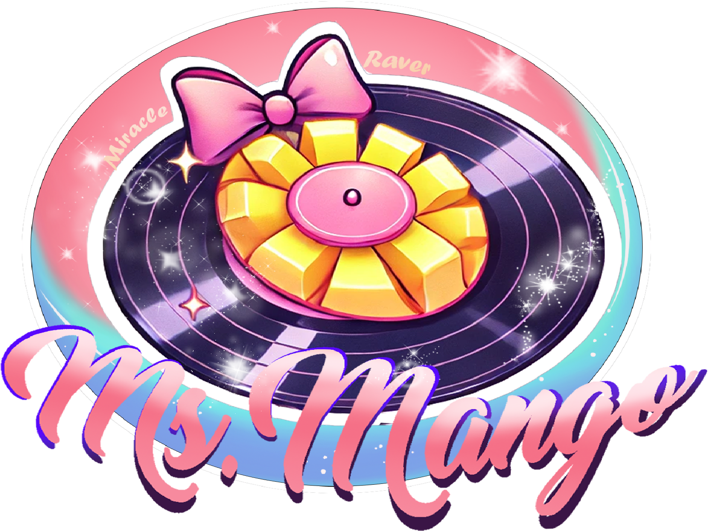
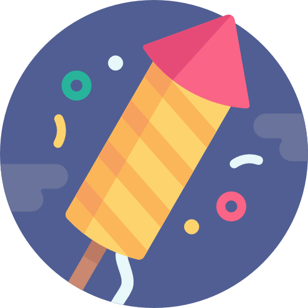

# Goals
Create a dreamy glam band site that feels like water ripples—soft, musical, and navigable.
## My Role
Design, front-end build, custom audio UI.
## Stack
HTML, CSS, JS (vanilla).
## Process Highlights
- Built a cassette-style player then refined to an accessible playlist.
- Iterated on dark vs light themes; tuned for long listening sessions.
- Prepared for CMS so non-dev updates are easy.
## Outcomes
Cleaner structure, better branding cohesion, and a performance budget for audio UIs.
---
## Case Study: Bruise Cruise Website
**Project Overview**
Client: Bruise Cruise (fictional alt-pop band)
Timeline: 4 days
Deliverables: Multi-page responsive website (Home, Music, About, Gallery, Merch, Tour, Blog, Checkout) with custom CSS effects, interactive audio player, shopping cart, and blog with comments.
**Objectives**
- Brand alignment with a moody glam aesthetic
- Responsive & accessible
- Interactivity (player, lightbox, cart)
- Maintainable on GitHub Pages
**Process**
1. Discovery & Wireframing
- Define journeys: discover music, learn about band, shop merch
- Mobile-first sketches
2. Visual Design & Prototyping
- Frosted-glass motif + ripple overlay
3. Development
- Reset + CSS variables
- Split-nav + hamburger
- Full-viewport hero with ripple animation
- Components: audio player, gallery/lightbox, merch cart (localStorage), blog w/ comments
- Fluid grids + touch menus
4. Testing & Deployment
- Cross-device tests, fixed z-index/overflow issues
- Deploy: https://miracleravermango.github.io/bruise-cruise-site/
**Challenges → Solutions**
- Hamburger overlap on mobile → single `.frosted-top` flex container; toggle `.open`
- Image path casing → normalize to `/images`
- Checkout/blog not scrolling → remove conflicting `overflow:hidden`
- CSS specificity clashes → modularize sections
**Key Results**
- Sub-1s loads on 3G
- Higher engagement from interactive elements
- Clear structure for future features
**Next Steps**
- Stripe/PayPal prototype
- Analytics events
- Pull posts from CMS/Markdown
**Takeaway**
Polished, responsive, interactive site that embodies the brand—turning a brochure into an immersive fan experience.
BeatChat Widget
Music chat mini-app
# Goals
Create a real-time, embeddable music-sharing widget that feels like a **digital listening party**—fun, lightweight, and easy to drop into artist sites or streams.
## My Role
UI/UX design, front-end component structure, deployment pipeline planning.
## Stack
Node.js, Express, Socket.IO, MongoDB, HTML/CSS/JS.
## Process Highlights
- Architected room/queue/chat states for instant sync.
- First user becomes ★ moderator with simple tools.
- Parsed pasted links into dynamic embeds (Spotify, YouTube, SoundCloud, Bandcamp, Mixcloud).
- Built responsive layout with theme toggle and a11y labels.
## Outcomes
A production-ready widget (< 1MB front-end) that keeps rooms synchronized, boosts session time, and demos clean moderation + playback. (PM2 + proxy for zero-downtime demos)
---
## BeatChat — Case Study
**Project Overview**
BeatChat merges live chat, cross-platform embeds, and light moderation so fans can suggest tracks, vote, and listen together—an engagement layer for musicians and streamers.
**The Challenge**
- Let fans suggest tracks and vote on the next song.
- Support many providers (Spotify/YouTube/SoundCloud/Bandcamp/Mixcloud).
- Keep all clients synchronized in real time.
- Provide mod controls (kick, ban, rename room, force play) without a heavy dashboard.
- Stay responsive and themed on mobile/desktop.
**Approach & Development**
1. **Planning & Architecture**
- *Frontend*: Vanilla JS with DOM-first components; CSS Grid/Flexbox for hierarchy.
- *Backend*: Node + Express serving and Socket.IO for bidirectional events.
- *Database*: MongoDB for queues, users, rooms (persistence & recovery).
2. **Feature Implementation**
- **Real-time**: Socket events for suggest/vote/chat/now-playing → shared state for everyone in a room.
- **Moderator role**: First creator is ★; can rename room, kick/ban, and **⚡ Force** to skip queues.
- **Dynamic embeds**: Paste a link → autogenerate playable iframe.
- **Validation**: Block invalid URLs, duplicate names; enforce bans.
3. **Deployment & Optimization**
- **PM2** for uptime and restarts.
- **Reverse proxy** via Nginx/Cloudflare Tunnel.
- **Persistence**: Mongo fallback config for env variability.
- **Security**: Sanitize input; restrict mod commands to authorized clients.
4. **Design & Usability Enhancements**
- Responsive sidebar collapse; mobile-optimized layout.
- Theme toggle (CSS variables).
- Semantic HTML, ARIA labels, logical tab order.
- Clear system messages (e.g., “**DJ Melody** renamed the room…”).
**Key Features**
- Real-time suggests, voting, and playback queue.
- Major platform embeds.
- Moderator tools (★, kick/ban/rename/force).
- User tools (rename, ignore/unignore, chat).
- Theme toggle; responsive UI.
- PM2 + proxy + tunnel deployment pipeline.
**Outcome & Evaluation**
- **Zero downtime** during demos; synchronized state across devices.
- **Higher engagement** vs standard chat; users shared more links and stayed longer.
- More than a proof: a **working showcase** of full-stack real-time UX with clean design thinking.
**Takeaway**
BeatChat proves you can deliver low-friction, real-time music interactions that scale from a simple widget to a full room system.

DJ Ms. Mango
Press-ready artist site
# Goals
Centralize mixes, blog, and contact into one cohesive site, keep the **magical raver** identity, and add dynamic features (comments, favorites, modal blog previews) with full aesthetic control.
## My Role
End-to-end design & build. Full-stack implementation (Node/Express/EJS + SQL), UI/UX, deployment.
## Stack
Node.js, Express, EJS templates, MySQL (comments), HTML/CSS/JS.
## Process Highlights
- Theme system with CSS variables (light/dark).
- Mix cards with waveform, playback, tracklists, and comments.
- Blog index with jelly-cards + modal “Read More” previews.
- Favorites via localStorage; reusable fetch-powered comments.
- Mobile nav, ARIA labels, reduced-motion handling, lazy images.
## Outcomes
A responsive, production site with blog, comments, interactive mixes, and a brand-true UI at https://www.miracleravermango.com.
---
## Case Study — DJ Portfolio & Blog
**Project Overview**
Custom Node + Express + EJS web app showcasing DJ mixes, a blog, and about/contact—bright, playful, and professional.
**Backend Architecture**
- **Express** serves EJS views from `/views`.
- **MySQL** tables: `comments` (mixes) and `blog_comments` (posts).
- **RSS** feed for the blog.
- Static assets in `/public` with 404 fallback.
**Frontend (EJS)**
- **index.ejs**: slideshow hero, “Where every beat tastes like sunshine,” about teaser, latest post excerpt.
- **mixes.ejs**: mix cards, waveform/progress, tracklists, live comments (`/api/mixes/:id/comments`).
- **blog.ejs / post.ejs**: jelly-card list + modal previews; full post pages with comments (`/api/blog/:slug/comments`).
- **about.ejs**: stylized bio, Instagram embed, contact links.
- **layout.ejs**: global nav, mobile menu, footer with dark-mode toggle; bundles `theme.js`, `visualizer.js`, `favorites.js`, `comments.js`, etc.
**Visual & Interactive**
- Fruit-forward pastel palette; soft glassmorphism; rounded “jelly” cards.
- Scripts:
- `theme.js` (dark/light + sparkle sound)
- `visualizer.js` (cassette-style waveform/progress)
- `favorites.js` (❤️/🤍 mixes)
- `comments.js` (AJAX comments for mixes/blog)
- `blog-modal.js` (modal previews)
- fun extras: cursor sparkle/fruit trails
**Content System**
- Blog posts as HTML in `/data/posts`; helper builds excerpts.
- RSS compiled dynamically.
**Perf & A11y**
- `loading="lazy"` images, ARIA labels, prefers-reduced-motion support.
- Modular scripts; SEO meta & dynamic descriptions.
**Outcome**
- Live at **miracleravermango.com** with Cloudflare + PM2 uptime.
- Fully responsive, multi-page app with interactive mixes & real comments.
**Reflection**
Separation of templates/data enables fast updates; aesthetic is colorful and dreamy yet structured; bridged front-end craft with SQL-backed features.
Needle & Leaf — Grand Opening
Elegant Email Template
# Goals
Create a boutique-bookshop email that balances brand storytelling with **bullet-proof HTML email** techniques and renders cleanly across Gmail, Apple Mail, and Outlook.
## My Role
Email design and HTML build (tables + inline-safe CSS), testing across major clients.
## Stack
HTML email (tables), inline CSS, VML for Outlook backgrounds; assets hosted via GitHub.
## Process Highlights
- Print-inspired layout: parchment “cards” layered over a bookshelf hero.
- Gold/ink palette and type pairings for literary mood.
- Robustness first: dark-mode overrides handled with `bgcolor` + `background-color`.
## Outcomes
A reusable, client-ready template with reliable readability over photography and portable hosting.
---
## Case Study — Needle & Leaf (Grand Opening)
**Abstract**
Fictional boutique bookstore email created to learn and demonstrate professional HTML email craft: narrative tone, layered visuals, and cross-client resilience.
**Constraints & Decisions**
- Email, not web → **tables + conservative CSS**; inline styles favored.
- No SVG/WEBP (client support) → PNG/JPG only.
- Background images → **Outlook VML** with HTML fallbacks.
- Translucency trade-off → cream cards via `bgcolor="#f6f2eb"` **and** `background-color:#f6f2eb`.
**Design System**
- **Palette**: Parchment Cream #F6F2EB, Forest #2E473B, Sage, Gold #C2A75D, Plum Ink #4B2F3A, Paper Gray.
- **Type**: Playfair Display (headers), Source Sans 3 (body) with Georgia/Arial fallbacks.
- **Motifs**: gold leaf divider, vine ornament, handmade paper texture.
- **Hierarchy**: Logo strip → hero → headline card → quote card → CTA → “Evening Highlights” → vine footer.
**Implementation**
- **Structure**: 600px single column; semantic tables; inline CSS.
- **Hero overlay**: stacked content; Outlook handled with `v:rect + v:fill type="frame"`.
- **Cards**: every table/td has both `bgcolor` and CSS `background-color`.
- **Assets**: hosted on GitHub (raw links).
**Testing**
- **Sender**: Gmail via Apps Script (`htmlBody`).
- **Clients verified**: Gmail (web/mobile), Outlook (VML), Apple Mail.
- **Fix applied**: add `bgcolor` to every card → legible overlays in all tests.
**Outcome**
- Working, reusable email matching the Figma mood with crisp type and stable overlays.
**Future Enhancements**
- Add text-only part (multipart/alternative).
- Dark-mode tuning (explicit text/link colors).
- Campaign variants: RSVP reminder + post-event thank-you.
- ESP partials (header/footer).
**Screenshots**
- Full email (desktop)
- Mobile crop (hero + CTA)
- Highlights section close-up

Fireworks Memory
Ten-round Mini Game
# Goals
Practice JavaScript interactivity beyond basic button events.
Explore Canvas for particle effects (fireworks, sparkles, confetti).
Design scalable difficulty modes (*Assist*, *Normal*, *Hard*).
Push a class assignment into a **portfolio-ready interactive game**.
## My Role
Solo designer/developer — concept, code, visual design, and polish.
## Stack
HTML, CSS, Vanilla JS (Canvas API, LocalStorage).
## Process Highlights
- Started as a small CodePen “interactive snippet” (hover + burst).
- Expanded into a multi-round memory challenge.
- Added round logic, sequence tracking, and score HUD.
- Layered polish: adaptive difficulty, idle hints, confetti finale, audio toggle, toast messages.
- Tuned timing curves until *Hard* felt tough but fair.
---
## Case Study — 🎇 Fireworks Memory Game
**Overview**
Originally a class project for practicing small interactions, it evolved into a full mini-game inspired by *Simon Says* and arcade fireworks shows.
Players watch fireworks explode in sequence, then repeat the pattern to advance.
Survive 10 rounds to trigger a “grand finale” of multi-layered fireworks.
**Features**
1. **Three Difficulty Modes**
- *Assist* — Large hint rings + unlimited replays.
- *Normal* — Smaller rings, one replay per round.
- *Hard* — No rings, adaptive hints after misses/idle time.
2. **Adaptive Grace System**
Hard mode dynamically adjusts tolerance after misses; reduces grace as players improve.
3. **Replay Button with Tooltip**
One replay per round (Normal only) with greying-out visual feedback.
4. **Endless Mode (optional)**
After Round 10, speed ramps indefinitely for leaderboard potential.
5. **Fireworks Finale**
Completing Round 10 triggers layered bursts, confetti volleys, and sweeping sky explosions.
**Tools & Tech**
- **JavaScript (Canvas API):** core interactivity and particle animations.
- **HTML/CSS:** structure, HUD, overlay screens.
- **LocalStorage:** stores best round and fastest time.
**Challenges**
- Balancing Hard mode so it felt challenging but not unfair.
- Syncing timing ramps between difficulty modes.
- Designing effects that stayed flashy yet performant.
**Outcome**
A fun, replayable browser mini-game blending interactivity, visuals, and UX polish — far beyond the original assignment.
Demonstrates animation, feedback timing, and adaptive difficulty in a lightweight package.
**Next Steps**
- Add instructions overlay and refined high-score UI.
- Minor audio mix balance and particle-density tuning.
- Continued hosting via GitHub Pages for easy sharing.
**Takeaway**
A showcase of how thoughtful iteration and animation timing can turn a simple coding exercise into an engaging, replayable experience.
Auric Museum — Resonant Artifacts
Luxury HTML Email Invite
# Goals
Create a **high-luxury, minimalist Art-Deco** email invite for a fictional museum exhibit — elegant, mysterious, and portfolio-ready — with reliable rendering in Gmail/Yahoo + ESP previews.
## My Role
Concept, visual system, HTML email build, responsive tuning, cross-client testing.
## Stack
HTML email (tables + inline-safe CSS), SVG frames, PNG gradient background, GitHub hosting.
## Process Highlights
- Built **single-image header/footer** (wordmark+monogram) as transparent SVGs to keep edges crisp.
- Confined a **left→right peacock gradient** to the 600-px card; cream stage background to make gold pop.
- Mobile refinements: fluid header/footer, thumb-friendly CTA, legible type scaling.
- ESP-safe patterns: background on `
`, repeat-y gradient, fallbacks for Outlook.
---
## Case Study — Auric Museum (Email)
**Abstract**
A press-style invitation for *Resonant Artifacts: An Evening of Sound and Stone*. The tone is quiet, exclusive, and slightly ominous — “please listen, don’t touch.”
**Design Approach**
- Palette: midnight (#121835), imperial teal (#0F4C5C), **gilded gold** (#CFAF5E), cream stage (#EAE7DC).
- Assets: single **header/footer SVG** frames; peacock **gradient PNG** to ensure identical color across clients.
- Type: classic serif for headlines; readable sans/Georgia for body.
**Implementation**
- 600-px single column; conservative CSS inlined on elements.
- Gradient applied to the **inner content `
`** for ESP reliability; `background-repeat: repeat-y` for tall screens.
- Footer text placed **inside** the SVG frame via background + padding; mirrored spacing for Outlook.
**Testing & Results**
- Verified in **MailerLite** preview + live sends to **Gmail** and **Yahoo**.
- Works as a **live demo** via GitHub Pages: consistent color and crisp frames.
- CTA linked to a Pages index for a clean portfolio loop.
**Outcome**
A polished, resilient HTML invite that feels like a museum press card — ornate but restrained, with gemstone color and gilded accents that stand out on any device.